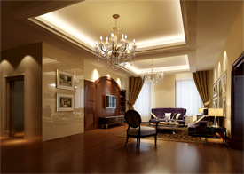
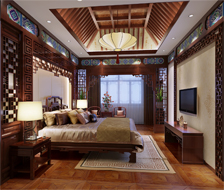
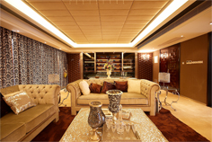
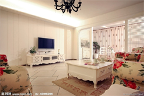

泊林印象160方古典欧式土豪装修锻造黄金般品质感
风格：欧式新古典 设计理念 丨 Design notes 本案以硬朗的古典欧式线条锻造都市隐贵心目中的理想生活。黄金般的质风格：欧式新古典 设计理念 丨 Design notes 本案以硬朗的古典欧式线条锻造都市隐贵心目中的理想生活。黄金般的质

鼎泰香港国际设计：德清武康500方中式豪宅国学精粹
风格：中式风格 设计理念 丨 Design notes 本案在500方的空间里，把国学精粹融合在大宅设计的关键点，将琴棋书

80后的婚房——广厦天都城83方现代简约打造的空间密语
风格：现代简约 设计理念 丨 Design notes 设计师结合业主的这几个实际需要，综合考虑，运用全环保精装修绿色设计

美玉朗润——春溪华庭420方现代欧式居家空间
风格：田园风格 设计理念 丨 Design notes 业主也比较时尚，对生活品质比较看重，要求设计中要突出自己最喜欢的一